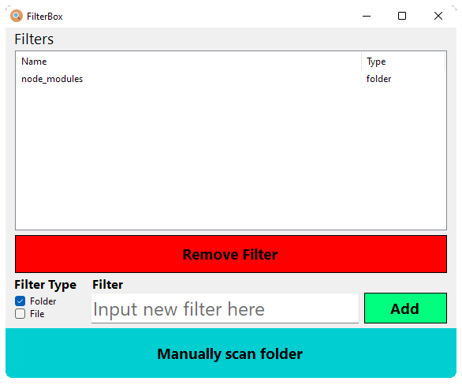
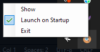

FilterBox


Table of Contents
Features
-
small size: app is intentionally built to run on already existing and popular runtimes to reduce footprint
-
event driven: does not use any background resources at all
-
performance: only filters newly renamed or created files
-
customizable: create your own filters inside the app
Description
Have you ever tried coding with Dropbox so you could sync progress and local commits between your computers? If yes, I'm certain you've Googled "How to ignore folders Dropbox", and found that there's really no easy way out other than having to manually run a Powershell or Shell command every time you create a new app.
This software aims to solve this, by always running in the background checking all file changes to see if they match your filters,
and then automatically tells Dropbox to ignore uploading these files and/or folders.
Not only does it save your limited Dropbox storage space for other important stuff,
it reduces the amount of bandwith used while developing. I've seen 1GB+ node_modules folders. That's 50% of your free Dropbox storage.
Download the app or check out the source code, and reserve your cloud storage for the more important files.
Screenshots
Main UI
System tray
UI
I'll have to admit that UI really wasn't a priority on this project, but I'll gladly accept any help provided. There's really no limit to how far you can go. If you need help translating the app into a library for your own UI, I'll assist.
Support
Open an issue if you feel like anything needs to be added. I'll gladly review pull requests and merge them if deemed to be useful!